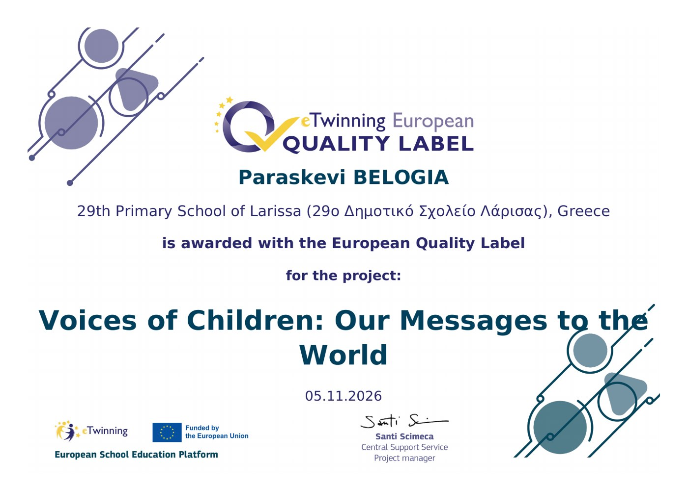
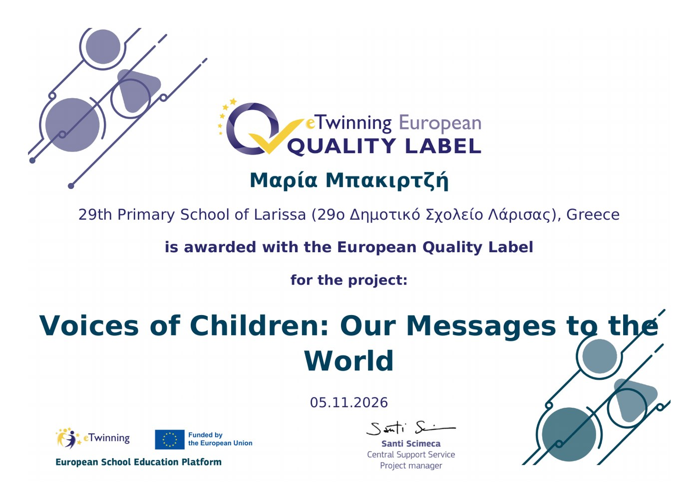
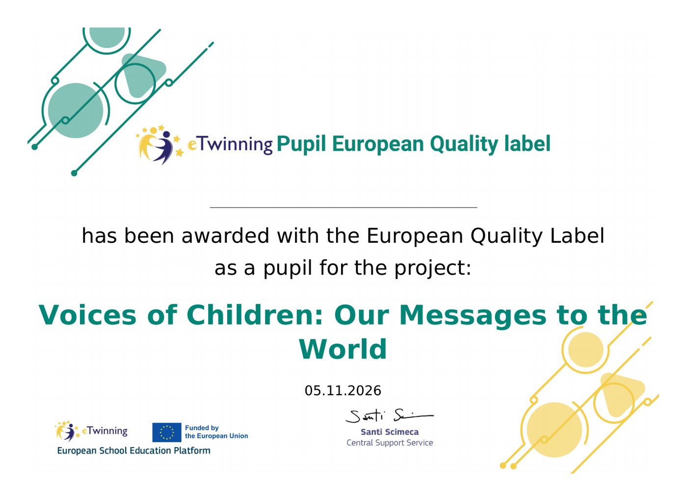

Μετά τις Εθνικές Ετικέτες Ποιότητας, ήρθε και η ευρωπαϊκή αναγνώριση! Το έργο eTwinning «Voices of Children: Our Messages to the World» τιμήθηκε με δύο Ευρωπαϊκές Ετικέτες Ποιότητας eTwinning, μία για κάθε εκπαιδευτικό του έργου.
Η Ευρωπαϊκή Ετικέτα Ποιότητας απονέμεται από την Κεντρική Υπηρεσία Υποστήριξης eTwinning σε έργα που ξεχωρίζουν σε όλη την Ευρώπη για την ποιότητα της συνεργασίας, την καινοτομία και τη συμμετοχή των μαθητών. Είναι μία από τις σημαντικότερες διακρίσεις που μπορεί να λάβει ένα έργο eTwinning.
Τη σχολική χρονιά 2025–2026, οι μαθητές της Δ΄ και της Ε΄ τάξης συνεργάστηκαν με συνομηλίκους τους από την Ιταλία και την Ιρλανδία. Μέσα από μηνιαίες δραστηριότητες εμπνευσμένες από παγκόσμιες ημέρες, μίλησαν για την καλοσύνη, τα δικαιώματα του παιδιού, την προσβασιμότητα, την ασφάλεια στο διαδίκτυο, το περιβάλλον και την ειρήνη, και έστειλαν τα δικά τους μηνύματα στον κόσμο.
Κάθε μαθητής και μαθήτρια του έργου λαμβάνει και το δικό του πιστοποιητικό Ευρωπαϊκής Ετικέτας Ποιότητας! 👏
Ευχαριστούμε θερμά τα παιδιά, τους γονείς και τα σχολεία-εταίρους μας στο Chieti και στο Δουβλίνο. Οι φωνές των παιδιών ακούστηκαν σε όλη την Ευρώπη! 💙
After the National Quality Labels comes European recognition! Our eTwinning project “Voices of Children: Our Messages to the World” has been awarded two eTwinning European Quality Labels, one for each teacher of the project.
The European Quality Label is awarded by the eTwinning Central Support Service to projects that stand out across Europe for the quality of their collaboration, innovation and pupil involvement. It is one of the most important distinctions an eTwinning project can receive.
In the 2025–2026 school year, our Grade 4 and Grade 5 pupils worked with peers from Italy and Ireland. Through monthly activities inspired by international days, they spoke about kindness, children's rights, accessibility, online safety, the environment and peace, and sent their own messages to the world.
Every pupil in the project also receives their own European Quality Label certificate! 👏
A big thank-you to our children, their families and our partner schools in Chieti and Dublin. Children's voices have been heard all over Europe! 💙


